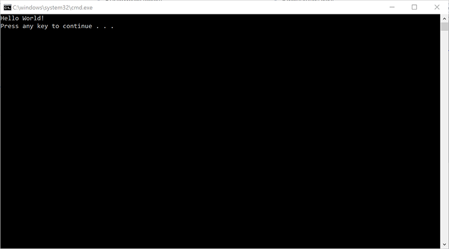
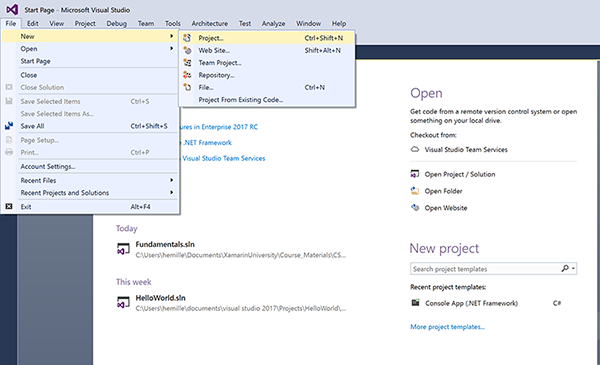
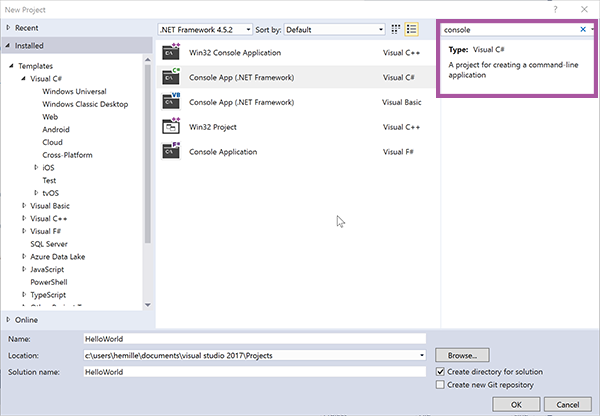
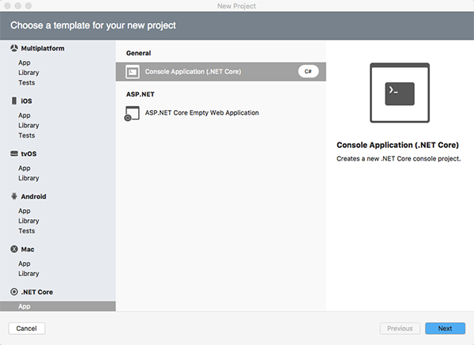
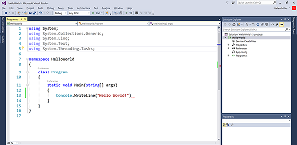
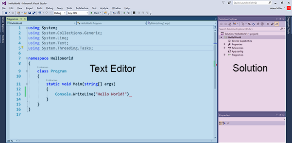
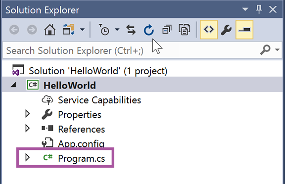
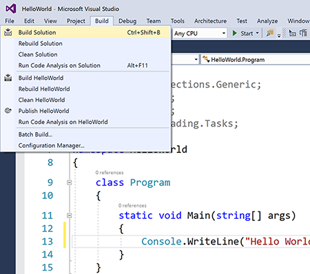
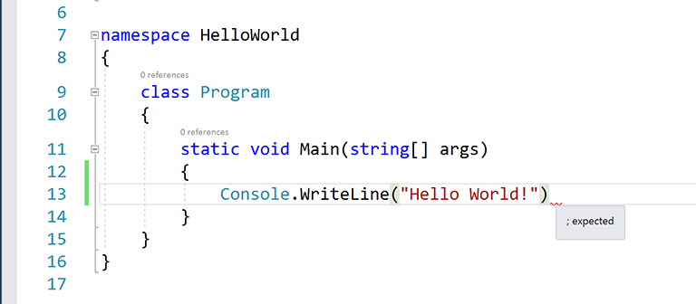
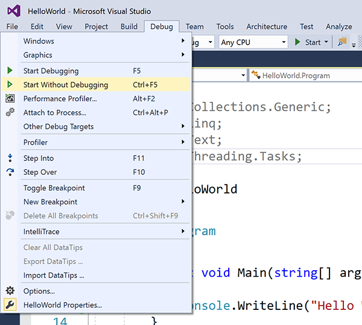

Duration
30 minutes
Lab goals
This exercise takes you through the entire process of building and running a C# program using Visual Studio. The C# code will be very simple. Most of your time will be spent creating a project, compiling it into an executable program, and running it to test your work. The overall steps are listed below:
- Create a new Console application.
- Write a custom message to the Console window.
- Build and run the program.
Below is the output from the finished application.
Required assets
The provided Exercise 1/Part1.Completed folder contains a completed version of the exercise you can use to check your work. Please make sure you have this folder before you begin.
Steps
Below are the step-by-step instructions to implement the exercise.
Create a new Console application
You will use Visual Studio to create an application. Visual Studio is an Integrated Development Environment (IDE) which means it has all the tools you need to write, build, and run your program.
- Start Visual Studio. You should see something similar to the image shown below.
- Create a new Project. Select File > New > Project menu entry (see below). 
- In the New Project dialog, click Visual C# > Windows Classic Desktop > Console App , you can also type console in the search bar and have Visual Studio find the appropriate template.  If you are using Visual Studio for Mac, click the new project button on the start screen and select .NET Core > Console Application and then click next 
- A Console project interacts with the user through a text-based window. It does not have a Graphical User Interface (GUI) with buttons and text-input areas but it is a great way to get started as a programmer since it requires very little code to get an application running.
- Enter HelloWorld in the Name field. The Name field determines the name of the Project.
- Notice how the Solution name field gets filled in automatically to match the project name. A Solution is a container that can hold multiple projects. For example, you could have a single solution with both your Android and iOS projects inside it. For solutions that contain only a single project, it makes sense for the project name and the solution name to match.
- In the Location field, enter the folder where you would like to store your work.
- When you have everything filled in, click OK.
- Visual Studio will create the Solution, the Project, and some starter C# code for you (see below). 
Write a custom message to the Console window
Visual Studio adds some convenient starter code for you when you create a new project. In this part, you will spend a few minutes working with Visual Studio to examine this starter code. You will then modify the code so it prints your custom message.
- Visual Studio makes it easy to work with your code. The Solution view along the left edge shows you your entire Solution. The text editor in the central area lets you modify the contents of your files. The image below shows these two key areas. 
- Visual Studio puts the starter code in a file named Program.cs. The code in the file is called source code and the file is called a source file. C# source files have a .cs extension. The Solution view lists the Program.cs file (see below). 
- The Program.cs file should already be open in the text editor. If it is not, double-click on it in the Solution view to open it.
-
Your C# program can make use of an extensive Standard Library that provides pre-written
pieces of code that you can call on to help you get your work done. For example, there are routines to
compute square root, search within text, read from a file on disk, etc. The library is divided into
namespaces where a namespace is a group of related code. The most common namespace is
System. If your program needs to use something fromSystem, you place the line of code shown below at the top of your source file. Your code will need to use theConsoleclass that is part of theSystemnamespace so it should contain the line of code shown below.using System;
-
You should put all of your own code inside one of your own namespaces (see below).
Most programmers use their company name as part of their namespace name to keep their code
clearly labeled and distinct from third-party code that they might incorporate into their
projects. Using a namespace is not technically required but it is considered a best practice.
namespace HelloWorld { ... } -
Inside your namespace, Visual Studio created a class named
MainClass(see below). For now, we can define a class informally as a group of related methods.class MainClass { ... } -
Inside
MainClass, Visual Studio created a method namedMain(see below). A method is a sequence of program instructions with a name. Other programming languages use the terms function, procedure, or subroutine for this concept. TheMainmethod is the program entry point; that is, it runs automatically when the program is started. The program automatically shuts down whenMaincompletes execution. The C# language defines very precise rules for howMainmust be written; for example, the modifierspublicandstaticare required, the name must beMainwith an upper-caseM, etc.class MainClass { public static void Main(string[] args) { ... } } -
Inside
Mainthere should be a call toConsole.WriteLinemethod (see below).Consoleis a class andWriteLineis a method defined inside it. You useWriteLineto print something to the Console window (remember that our project type is Console Project so the user will see a Console window automatically when the program runs).Console.WriteLine("Hello World!"); -
Change the
"Hello World!"text so the program will print a message of your choice.
Build and run the program
In order to test your program, you must first build an executable file from your source code. The precise term for this process is build. The compiler performs the key part of the build process since it translates the source code you wrote into the machine code that the CPU can understand. For our simple program, compilation is the main step of the build process. Other projects such as Android or iOS apps have complicated build processes that require steps such as code generation or the packaging multiple files into a single archive.
- To build your project, click on the Build > Build Solution menu entry in Visual Studio (see below). 
- If your program is correct, you should see the message Build succeded message in the output window at the bottom of the screen.
- If your program has an error, Visual Studio will show you the line that has the problem along with a short description of the issue (see below). Examine the indicated line, fix the problem, and try to build again. 
- To run your program, click on the Debug > Start Without Debugging menu entry (see below). 
-
A Console window should appear on your screen and display the message you passed to
Console.WriteLineas shown below.